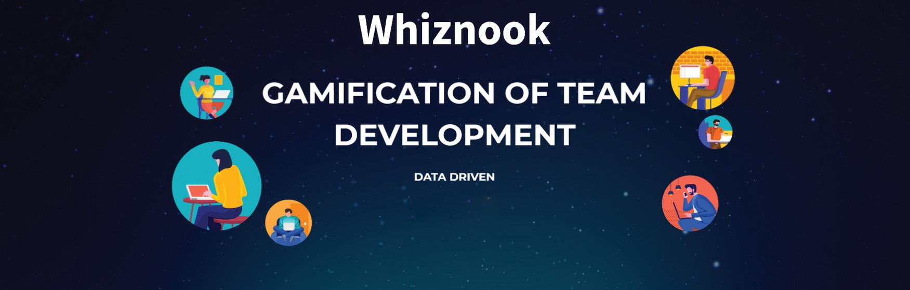
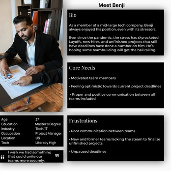
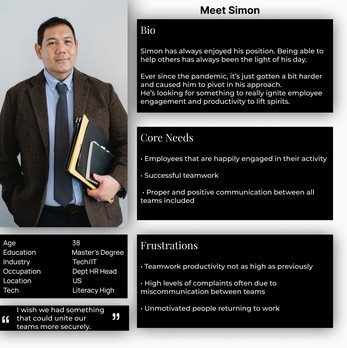
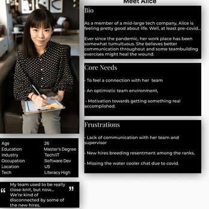
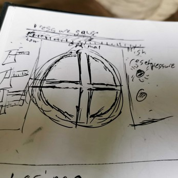
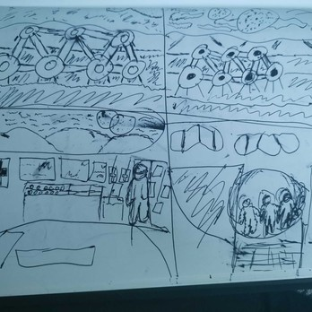
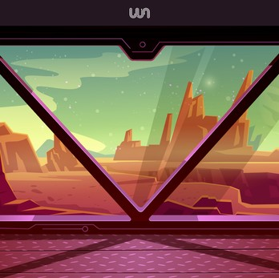
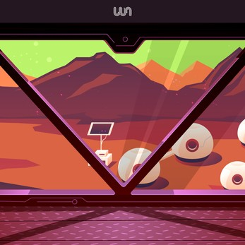
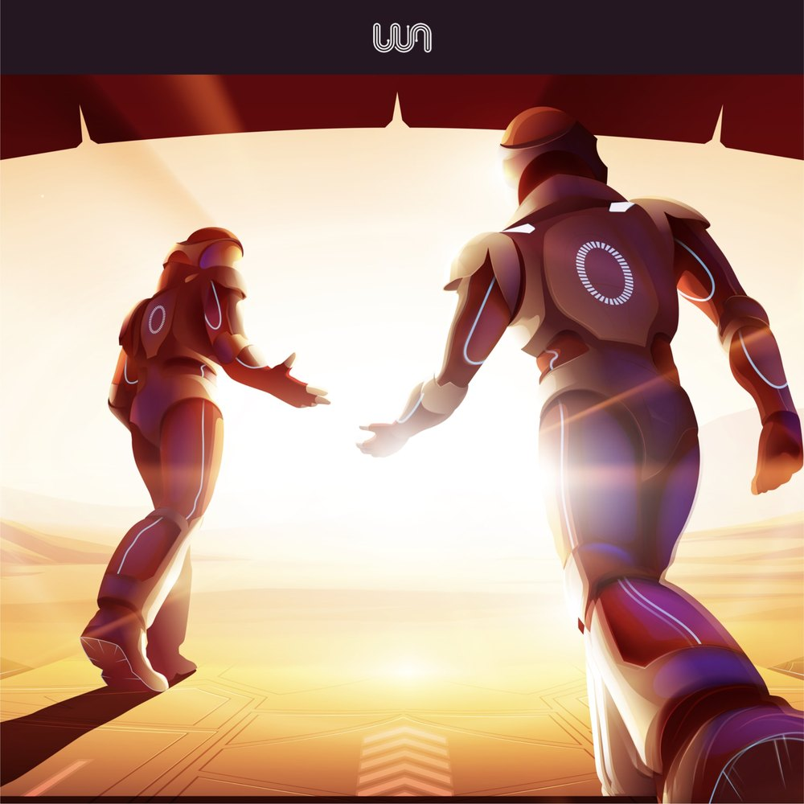
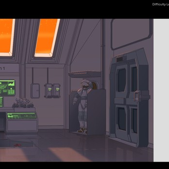

Whiznook: Gamification of Team Development
At Whiznook we worked with enterprise companies to help reduce workplace toxicity by fostering communication among teams. As a UX/UI designer, I worked on QA, the portal (lobby) design, storyboards, user personas, narrative design, a branding guide, and research for additional games.
- Role
- UX/UI designer
- Company
- Whiznook, gamified enterprise software
- Timeline
- June 2021 to July 2022
- Worked with
- The CTO and CEO

The challenge
One of our challenges was how to help reduce workplace toxicity in the current, often remote work environment, where employees aren't nearby or regularly interacting with each other the way they used to.
I worked very closely with the CTO and CEO to bring the project to fruition, and during my time there I saw a 300% rise in clientele.
What I did
- QA
- The portal (lobby) design
- Storyboards
- User personas
- Narrative design
- A branding guide
- Research for additional games
- Some light work in GitLab
Personas
Based on interviews and surveys, we developed several personas using the data from our research and interviews with clients. They were very helpful during development and design, and also when communicating with clients.
Using the personas and user interviews, we redesigned some features, in particular our reports, the lobby, and certain game features.



Storyboard sketches
I created these rough sketches to work out what the game needed to look like and where we wanted the player to go, what the backstory would be, and what winning and losing scenarios would look like.
Our level artist would then understand what was needed, produce much higher resolution renditions, and introduce them into the game.



UI design
I was instrumental in laying out the direction for how the UI would be designed. We looked at several different designs, and I'm proud to have been part of the design team behind the one we built. It looks like a classic computer game, with more modern details.




Game art by the level artist, built from the storyboards.
Final thoughts
- Always ask questions.
- Users often have the answer; you just need to pay close attention.
- When you give users what they want, they tell their friends. That is profit.
From the CTO
“Jim has a comprehensive, thoughtful and insightful understanding of design, especially how elements fit within the larger context of a project. He communicates his thoughts clearly and concisely. One of Jim's special qualities that I observed is how he improves the communication within a team, and thus, the work it produces.”